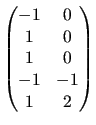
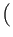
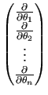
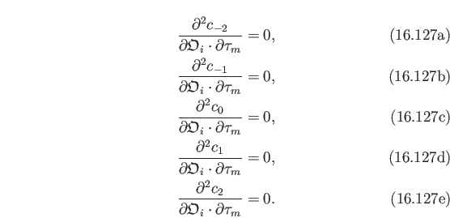
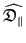
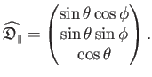
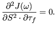

Next: Ellipsoidal diffusion tensor Up: Model-free analysis Previous: The extended model-free gradient Contents Index
The model-free Hessian of the extended spectral density function (13.63) is the matrix of second partial derivatives. The matrix coordinates correspond to the model parameters which are being optimised.


| (theparentequation.77) |
|  | (theparentequation.78) |
|  | (theparentequation.79) |
|  | (theparentequation.80) |
The second partial derivative of (13.63) with respect to the order parameter S2 twice is
 |
(theparentequation.81) |
The second partial derivative of (13.63) with respect to the order parameters S2 and S2f is
|  | (theparentequation.82) |
|  | (theparentequation.83) |
|  | (theparentequation.84) |
The second partial derivative of (13.63) with respect to the order parameter S2f twice is
|  | (theparentequation.85) |
 |
(theparentequation.86) |
 |
(theparentequation.87) |
 |
(theparentequation.88) |
 |
(theparentequation.89) |
 |
(theparentequation.90) |